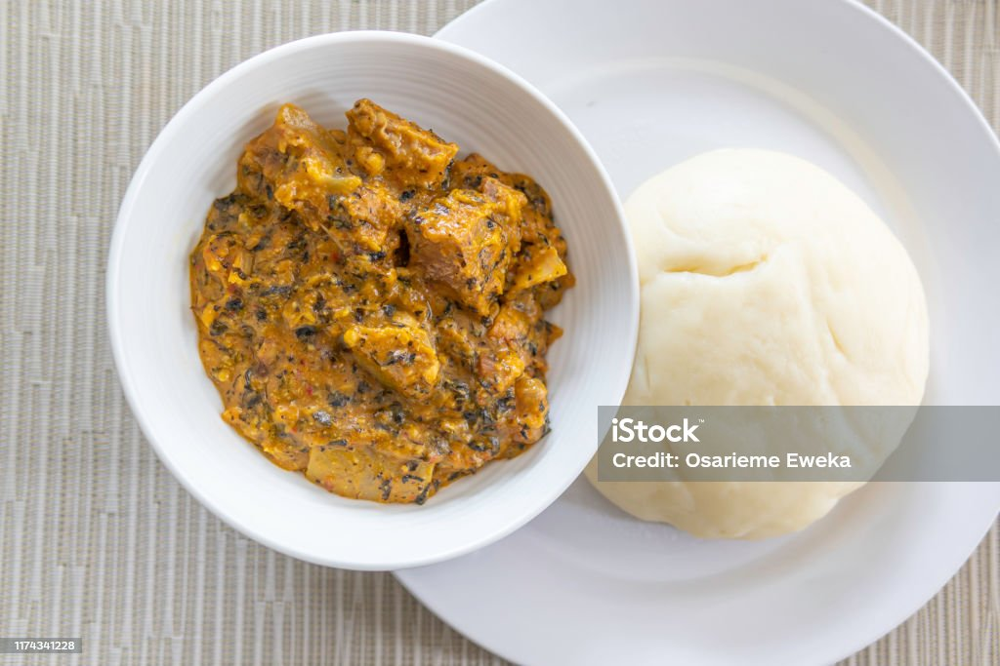

Foufou

Description
Le foufou (parfois fufu) est une pâte ou purée comestible, solide ou molle selon le goût du consommateur, réalisée à partir de farines ou de tubercules bouillis et pilés. Il est fabriqué à partir de manioc, de maïs, de banane plantain ou d'igname, et se mange avec une sauce en accompagnement.
Ingrédiants
- igname ou manioc
- viande,Environ 3 petites boules (doses à augmenter si nécessaire).
- 500 ml d'eau. 130g de purée déshydratée. 2 cuillères à soupe ,les épices
Etapes
-
1. Lavez bien les poissons et déposez-les dans une casserole.
2. Ajoutez un oignon émincé, le sel, le poivre et la poudre de crevettes séchées
- 3. Épluchez les bananes, découpez-les en 2 et déposez-les sur les poissons.
4. Versez l'huile rouge sur les poissons puis ajoutez les tomates, le piment, l'eau pour la cuisson,
- 5. Retirez la banane et écrasez-la dans un mortier en rajoutant de l'huile rouge et un peu de sel.
6. Retirez les oignons, les tomates, les piments, écrasez-les et rajoutez-les à la préparation.
7. Ajoutez les crabes et assaisonnez à votre goût.
8. Recouvrez pendant 15 min et servez chaud.